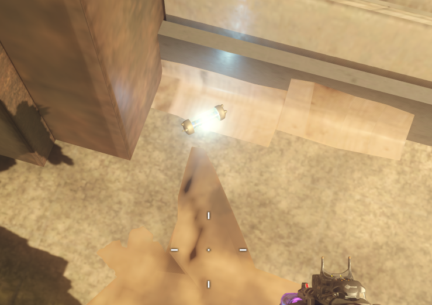
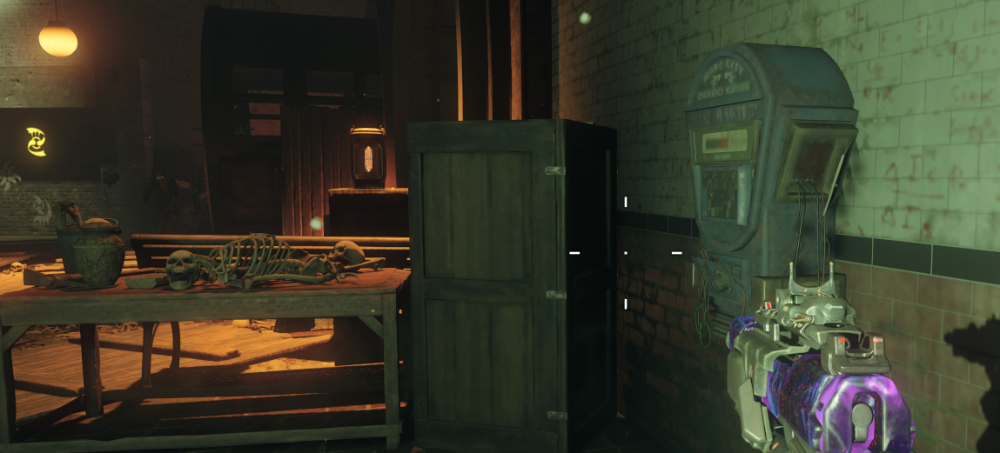

Primer fusible: En los pasillos superiores de Canals.
Segundo fusible: En los pasillos superiores de Footlight.
Tercer fusible: En los pasillos superiores de Waterfront.

Colocar los tres fusibles en la zona de entrada al Pack-A-Punch
